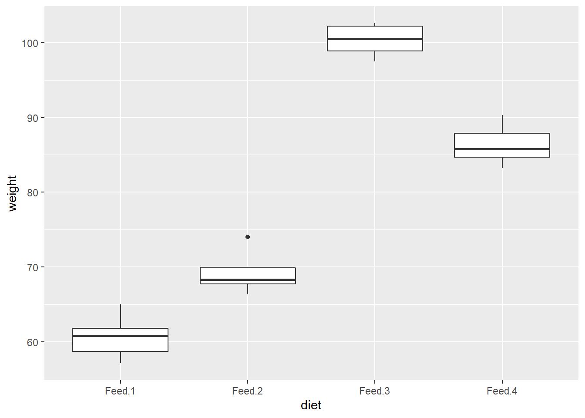

Chapter 2 Probability
2.1 Principles
Here are three rules that come up all the time.
\(Pr(A \cup B) = Pr(A)+Pr(B) - Pr(AB)\). This rule generalizes to \(Pr(A \cup B \cup C)=Pr(A)+Pr(B)+Pr(C)-Pr(AB)-Pr(AC)-Pr(BC)+Pr(ABC)\).
\(Pr(A|B) = \frac{P(AB)}{P(B)}\)
If A and B are independent, \(Pr(A \cap B) = Pr(A)Pr(B)\), and \(Pr(A|B)=Pr(A)\).
Uniform distributions on finite sample spaces often reduce to counting the elements of A and the sample space S, a process called combinatorics. Here are three important combinatorial rules.
Multiplication Rule. \(|S|=|S_1 |⋯|S_k|\).
How many outcomes are possible from a sequence of 4 coin flips and 2 rolls of a die? \(|S|=|S_1| \cdot |S_2| \dots |S_6| = 2 \cdot 2 \cdot 2 \cdot 2 \cdot 6 \cdot 6 = 288\).
How many subsets are possible from a set of n=10 elements? In each subset, each element is either included or not, so there are \(2^n = 1024\) subsets.
How many subsets are possible from a set of n=10 elements taken k at a time with replacement? Each experiment has \(n\) possible outcomes and is repeated \(k\) times, so there are \(n^k\) subsets.
Permutations. The number of ordered arrangements (permutations) of a set of \(|S|=n\) items taken \(k\) at a time without replacement has \(n(n-1) \dots (n-k+1)\) subsets because each draw is one of k experiments with decreasing number of possible outcomes.
\[_nP_k = \frac{n!}{(n-k)!}\]
Notice that if \(k=0\) then there is 1 permutation; if \(k=1\) then there are \(n\) permutations; if \(k=n\) then there are \(n!\) permutations.
How many ways can you distribute 4 jackets among 4 people? \(_nP_k = \frac{4!}{(4-4)!} = 4! = 24\)
How many ways can you distribute 4 jackets among 2 people? \(_nP_k = \frac{4!}{(4-2)!} = 12\)
Subsets. The number of unordered arrangements (combinations) of a set of \(|S|=n\) items taken \(k\) at a time without replacement has
\[_nC_k = {n \choose k} = \frac{n!}{k!(n-k)!}\]
combinations and is called the binomial coefficient. The binomial coefficient is the number of different subsets. Notice that if k=0 then there is 1 subset; if k=1 then there are n subsets; if k=n then there is 1 subset. The connection with the permutation rule is that there are \(n!/(n-k)!\) permutations and each permutation has \(k!\) permutations.
How many subsets of 7 people can be taken from a set of 12 persons? \(_{12}C_7 = {12 \choose 7} = \frac{12!}{7!(12-7)!} = 792\)
If you are dealt five cards, what is the probability of getting a “full-house” hand containing three kings and two aces (KKKAA)? \[P(F) = \frac{{4 \choose 3} {4 \choose 2}}{{52 \choose 5}}\]
Distinguishable permutations. The number of unordered arrangements (distinguishable permutations) of a set of \(|S|=n\) items in which \(n_1\) are of one type, \(n_2\) are of another type, etc., is
\[{n \choose {n_1, n_2, \dots, n_k}} = \frac{n!}{n_1! n_2! \dots n_k!}\]
How many ordered arrangements are there of the letters in the word PHILIPPINES? There are n=11 objects. \(|P|=n_1=3\); \(|H|=n_2=1\); \(|I|=n_3=3\); \(|L|=n_4=1\); \(|N|=n_5=1\); \(|E|=n_6=1\); \(|S|=n_7=1\).
\[{n \choose {n_1, n_2, \dots, n_k}} = \frac{11!}{3! 1! 3! 1! 1! 1! 1!} = 1,108,800\]
How many ways can a research pool of 15 subjects be divided into three equally sized test groups?
\[{n \choose {n_1, n_2, \dots, n_k}} = \frac{15!}{5! 5! 5!} = 756,756\]
2.2 Discrete Distributions
2.2.1 Binomial
If \(X\) is the count of successful events in \(n\) identical and independent Bernoulli trials of success probability \(p\), then \(X\) is a random variable with a binomial distribution \(X \sim b(n,p)\) with mean \(\mu=np\) and variance \(\sigma^2 = np(1-p)\). The probability of \(X=x\) successes in \(n\) trials is
\[P(X=x) = \frac{{n!}}{{x!(n-x)!}} p^x (1-p)^{n-x}.\]
What is the probability 2 out of 10 coin flips are heads if the probability of heads is 0.3?
Function dbinom() calculates the binomial probability.
## [1] 0.2334744A simulation of n = 10,000 random samples of size 10 gives a similar result. rbinom() generates a random sample of numbers from the binomial distribution.
library(tidyverse)
data.frame(cnt = rbinom(n = 10000, size = 10, prob = 0.3)) %>%
count(cnt) %>%
ungroup() %>%
mutate(pct = n / sum(n),
X_eq_x = cnt == 2) %>%
ggplot(aes(x = as.factor(cnt), y = n, fill = X_eq_x, label = pct)) +
geom_col(alpha = 0.8) +
scale_fill_manual(values = c(my_colors$grey, my_colors$red)) +
geom_label(aes(label = round(pct, 2)), size = 3, alpha = .6) +
theme_minimal() +
theme(legend.position = "none") +
labs(title = "Binomial Distribution",
subtitle = paste0("P(X=2) successes in 10 trials when p = 0.3 is ", round(dbinom(2, 10, 0.3), 4), "."),
x = "Successes",
y = "Count",
caption = "Simulation from n = 10,000 binomial random samples.") 
What is the probability of <=2 heads in 10 coin flips where probability of heads is 0.3?
The cumulative probability is the sum of the first three bars in the simulation above. Function pbinom() calculates the cumulative binomial probability.
## [1] 0.3827828What is the expected number of heads in 25 coin flips if the probability of heads is 0.3?
The expected value, \(\mu = np\), is 7.5. Here’s an empirical test from 10,000 samples.
## [1] 7.5036The variance, \(\sigma^2 = np (1 - p)\), is 5.25. Here’s an empirical test.
## [1] 5.334677Suppose X and Y are independen random variables distributed X ~ b(10, .6) and Y ~ b(10, .7). What is the probability that either variable is <=4?
Let \(P(A) = P(X<=4)\) and \(P(B) = P(Y<=4)\). Then \(P(A|B) = P(A) + P(B) - P(AB)\), and because the events are independent, \(P(AB) = P(A)P(B)\).
p_a <- pbinom(q = 4, size = 10, prob = 0.6, lower.tail = TRUE)
p_b <- pbinom(q = 4, size = 10, prob = 0.7, lower.tail = TRUE)
p_a + p_b - (p_a * p_b)## [1] 0.2057164Here’s an empirical test.
df <- data.frame(
x = rbinom(10000, 10, 0.6),
y = rbinom(10000, 10, 0.7)
)
mean(if_else(df$x <= 4 | df$y <= 4, 1, 0))## [1] 0.20592.2.2 Negative-Binomial
If \(X\) is the count of trials required to reach a target number \(r\) of successful events in identical and independent Bernoulli trials of success probability \(p\), then \(X\) is a random variable with a negative-binomial distribution \(X \sim nb(r,p)\) with mean \(\mu=r/p\) and variance \(\sigma^2 = r(1-p)/p^2\). The probability of \(X=x\) trials prior to \(r\) successes is
\[P(X=x) = {{x - 1} \choose {r - 1}} p^r (1-p)^{x-r}.\]
An oil company has a p = 0.20 chance of striking oil when drilling a well. What is the probability the company drills x = 7 wells to strike oil r = 3 times?
\[P(X=7) = {{7 - 1} \choose {3 - 1}} (0.2)^3 (1-0.2)^{(7-3)} = 0.049.\]
Function dnbinom() calculates the negative-binomial probability. Parameter x equals the number of failures, \(x - r\).
## [1] 0.049152Here is a simulation of n = 10,000 random samples. rnbinom() generates a random sample of numbers from the negative-binomial distribution.
data.frame(cnt = rnbinom(n = 10000, size = 3, prob = 0.2)) %>%
count(cnt) %>%
ungroup() %>%
mutate(pct = n / sum(n),
X_eq_x = cnt == 7-3,
cnt = cnt + 3) %>%
filter(cnt < 15) %>%
ggplot(aes(x = as.factor(cnt), y = n, fill = X_eq_x, label = pct)) +
geom_col(alpha = 0.8) +
scale_fill_manual(values = c(my_colors$grey, my_colors$red)) +
geom_label(aes(label = round(pct, 2)), size = 3, alpha = .6, check_overlap = TRUE) +
theme_minimal() +
theme(legend.position = "none") +
labs(title = "Negative-Binomial Distribution",
subtitle = paste0("P(X=7) trials to reach 3 successes when p = 0.2 is ", round(dnbinom(4, 3, 0.2), 4), "."),
x = "Trials",
y = "Count",
caption = "Simulation from n = 10,000 negative-binomial random samples.") 
2.2.3 Geometric
If \(X\) is the count of independent Bernoulli trials of success probability \(p\) required to achieve the first successful trial, then \(X\) is a random variable with a geometric distribution \(X \sim G(p)\) with mean \(\mu=\frac{{n}}{{p}}\) and variance \(\sigma^2 = \frac{{(1-p)}}{{p^2}}\) . The probability of \(X=n\) trials is
\[f(X=n) = p(1-p)^{n-1}.\]
The probability of \(X<=n\) trials is
\[F(X=n) = 1 - (1-p)^n.\]
Example. A sports marketer randomly selects persons on the street until he encounters someone who attended a game last season. What is the probability the marketer encounters x = 3 people who did not attend a game before the first success if p = 0.20 of the population attended a game?
Function pgeom() calculates the geometric distribution probability.
## [1] 0.1024data.frame(cnt = rgeom(n = 10000, prob = 0.20)) %>%
count(cnt) %>%
top_n(n = 15, wt = n) %>%
ungroup() %>%
mutate(pct = round(n / sum(n), 2),
X_eq_x = cnt == 3) %>%
ggplot(aes(x = as.factor(cnt), y = n, fill = X_eq_x, label = pct)) +
geom_col(alpha = 0.8) +
scale_fill_manual(values = c(my_colors$grey, my_colors$red)) +
geom_text(size = 3) +
theme_minimal() +
theme(legend.position = "none") +
labs(title = "Distribution of trials prior to first success",
subtitle = paste("P(X = 3) | X ~ G(.2) = ", round(dgeom(3, .2), 4)),
x = "Unsuccessful trials",
y = "Count",
caption = "simulation of n = 10,000 samples from geometric dist.") 
2.3 Continuous Distributions
2.3.1 Normal
Random variable \(X\) is distributed \(X \sim N(\mu, \sigma^2)\) if
\[f(X)=\frac{{1}}{{\sigma \sqrt{{2\pi}}}}e^{-.5(\frac{{x-\mu}}{{\sigma}})^2}\].
Example
IQ scores are distributed \(X \sim N(100, 16^2\). What is the probability a randomly selected person’s IQ is <90?
my_mean = 100
my_sd = 16
my_x = 90
# exact
pnorm(q = my_x, mean = my_mean, sd = my_sd, lower.tail = TRUE)## [1] 0.2659855## [1] 0.2668library(dplyr)
library(ggplot2)
data.frame(x = 0:1500 / 10,
prob = pnorm(q = 0:1500 / 10,
mean = my_mean,
sd = my_sd,
lower.tail = TRUE)) %>%
mutate(cdf = ifelse(x > 0 & x <= my_x, prob, 0)) %>%
ggplot() +
geom_line(aes(x = x, y = prob)) +
geom_area(aes(x = x, y = cdf), alpha = 0.3) +
labs(title = bquote('X~N('~mu==.(my_mean)~','~sigma^{2}==.(my_sd)^{2}~')'),
subtitle = bquote('P(X<='~.(my_x)~') when mean is'~.(my_mean)~' and variance is'~.(my_sd)^{2}~'.'),
x = "x",
y = "Probability") 
2.3.2 Example
IQ scores are distributed \(X \sim N(100, 16^2\). What is the probability a randomly selected person’s IQ is >140?
my_mean = 100
my_sd = 16
my_x = 140
# exact
pnorm(q = my_x, mean = my_mean, sd = my_sd, lower.tail = FALSE)## [1] 0.006209665## [1] 0.0068library(dplyr)
library(ggplot2)
data.frame(x = 0:1500 / 10,
prob = pnorm(q = 0:1500 / 10,
mean = my_mean,
sd = my_sd,
lower.tail = TRUE)) %>%
mutate(cdf = ifelse(x > my_x & x < 1000, prob, 0)) %>%
ggplot() +
geom_line(aes(x = x, y = prob)) +
geom_area(aes(x = x, y = cdf), alpha = 0.3) +
labs(title = bquote('X~N('~mu==.(my_mean)~','~sigma^{2}==.(my_sd)^{2}~')'),
subtitle = bquote('P(X<='~.(my_x)~') when mean is'~.(my_mean)~' and variance is'~.(my_sd)^{2}~'.'),
x = "x",
y = "Probability") 
2.3.3 Example
IQ scores are distributed \(X \sim N(100, 16^2\). What is the probability a randomly selected person’s IQ is between 92 and 114?
my_mean = 100
my_sd = 16
my_x_l = 92
my_x_h = 114
# exact
pnorm(q = my_x_h, mean = my_mean, sd = my_sd, lower.tail = TRUE) -
pnorm(q = my_x_l, mean = my_mean, sd = my_sd, lower.tail = TRUE)## [1] 0.5006755library(dplyr)
library(ggplot2)
data.frame(x = 0:1500 / 10,
prob = pnorm(q = 0:1500 / 10,
mean = my_mean,
sd = my_sd,
lower.tail = TRUE)) %>%
mutate(cdf = ifelse(x > my_x_l & x <= my_x_h, prob, 0)) %>%
ggplot() +
geom_line(aes(x = x, y = prob)) +
geom_area(aes(x = x, y = cdf), alpha = 0.3) +
labs(title = bquote('X~N('~mu==.(my_mean)~','~sigma^{2}==.(my_sd)^{2}~')'),
subtitle = bquote('P(X<='~.(my_x)~') when mean is'~.(my_mean)~' and variance is'~.(my_sd)^{2}~'.'),
x = "x",
y = "Probability") 
2.3.4 Example
Class scores are distributed \(X \sim N(70, 10^2\). If the instructor wants to give A’s to >=85th percentile and B’s to 75th-85th percentile, what are the cutoffs?
my_mean = 70
my_sd = 10
my_pct_l = .75
my_pct_h = .85
qnorm(p = my_pct_l, mean = my_mean, sd = my_sd, lower.tail = TRUE)## [1] 76.7449## [1] 80.36433library(dplyr)
library(ggplot2)
data.frame(x = 0:1000 / 10,
prob = pnorm(q = 0:1000 / 10,
mean = my_mean,
sd = my_sd,
lower.tail = TRUE)) %>%
mutate(cdf = ifelse(prob > my_pct_l & prob <= my_pct_h, prob, 0)) %>%
ggplot() +
geom_line(aes(x = x, y = prob)) +
geom_area(aes(x = x, y = cdf), alpha = 0.3) +
labs(title = bquote('X~N('~mu==.(my_mean)~','~sigma^{2}==.(my_sd)^{2}~')'),
subtitle = bquote('P(X<=x) = ['~.(my_pct_l)~','~.(my_pct_h)~'] when mean is'~.(my_mean)~' and variance is'~.(my_sd)^{2}~'.'),
x = "x",
y = "Probability") 
2.3.5 Normal Approximation to Binomial
The CLT implies that certain distributions can be approximated by the normal distribution.
The binomial distribution \(X \sim B(n,p)\) is approximately normal with mean \(\mu = n p\) and variance \(\sigma^2=np(1-p)\). The approximation is useful when the expected number of successes and failures is at least 5: \(np>=5\) and \(n(1-p)>=5\).
2.3.6 Example
A measure requires p>=50% popular to pass. A sample of n=1,000 yields x=460 approvals. What is the probability that the overall population approves, P(X)>0.5?
my_x = 460
my_p = 0.50
my_n = 1000
my_mean = my_p * my_n
my_sd = round(sqrt(my_n * my_p * (1 - my_p)), 1)
# Exact binomial
pbinom(q = my_x, size = my_n, prob = my_p, lower.tail = TRUE)## [1] 0.006222073# Normal approximation
pnorm(q = my_x, mean = my_p * my_n, sd = sqrt(my_n * my_p * (1 - my_p)), lower.tail = TRUE)## [1] 0.005706018library(dplyr)
library(ggplot2)
library(tidyr)
data.frame(x = 400:600,
Normal = pnorm(q = 400:600,
mean = my_p * my_n,
sd = sqrt(my_n * my_p * (1 - my_p)),
lower.tail = TRUE),
Binomial = pbinom(q = 400:600,
size = my_n,
prob = my_p,
lower.tail = TRUE)) %>%
gather(key = "Distribution", value = "cdf", c(-x)) %>%
ggplot(aes(x = x, y = cdf, color = Distribution)) +
geom_line() +
labs(title = bquote('X~B(n='~.(my_n)~', p='~.(my_p)~'), '~'X~N('~mu==.(my_mean)~','~sigma^{2}==.(my_sd)^{2}~')'),
subtitle = "Normal approximation to the binomial",
x = "x",
y = "Probability") 
The Poisson distribution \(x~P(\lambda)\) is approximately normal with mean \(\mu = \lambda\) and variance \(\sigma^2 = \lambda\), for large values of \(\lambda\).
2.3.7 Example
The annual number of earthquakes registering at least 2.5 on the Richter Scale and having an epicenter within 40 miles of downtown Memphis follows a Poisson distribution with mean \(\lambda=6.5\). What is the probability that at least \(x>=9\)* such earthquakes will strike next year?*
my_x = 9
my_lambda = 6.5
my_sd = round(sqrt(my_lambda), 2)
# Exact Poisson
ppois(q = my_x - 1, lambda = my_lambda, lower.tail = FALSE)## [1] 0.208427## [1] 0.216428library(dplyr)
library(ggplot2)
library(tidyr)
data.frame(x = 0:200 / 10,
Normal = pnorm(q = 0:200 / 10,
mean = my_lambda,
sd = my_sd,
lower.tail = TRUE),
Poisson = ppois(q = 0:200 / 10,
lambda = my_lambda,
lower.tail = TRUE)) %>%
gather(key = "Distribution", value = "cdf", c(-x)) %>%
ggplot(aes(x = x, y = cdf, color = Distribution)) +
geom_line() +
labs(title = bquote('X~P('~lambda~'='~.(my_lambda)~'), '~'X~N('~mu==.(my_lambda)~','~sigma^{2}==.(my_lambda)~')'),
subtitle = "Normal approximation to the Poisson",
x = "x",
y = "Probability") 
2.3.8 From Sample to Population
Suppose a person’s blood pressure typically measures 160?20 mm. If one takes n=5 blood pressure readings, what is the probability the average will be <=150?
my_mu = 160
my_sigma = 20
my_n = 5
my_x = 150
my_se = round(my_sigma / sqrt(my_n), 1)
pnorm(q = my_x, mean = my_mu, sd = my_sigma / sqrt(my_n), lower.tail = TRUE)## [1] 0.1317762library(dplyr)
library(ggplot2)
data.frame(x = 1000:2000 / 10,
prob = pnorm(q = 1000:2000 / 10,
mean = my_mu,
sd = my_sigma / sqrt(my_n),
lower.tail = TRUE)) %>%
mutate(cdf = ifelse(x > 0 & x <= my_x, prob, 0)) %>%
ggplot() +
geom_line(aes(x = x, y = prob)) +
geom_area(aes(x = x, y = cdf), alpha = 0.3) +
labs(title = bquote('X~N('~mu==.(my_mu)~','~sigma^{2}==.(my_se)^{2}~')'),
subtitle = bquote('P(X<='~.(my_x)~') when mean is'~.(my_mu)~' and variance is'~sigma~'/sqrt(n)'~.(my_se)^{2}~'.'),
x = "x",
y = "Probability")